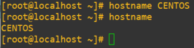
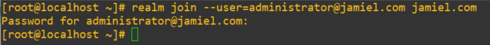
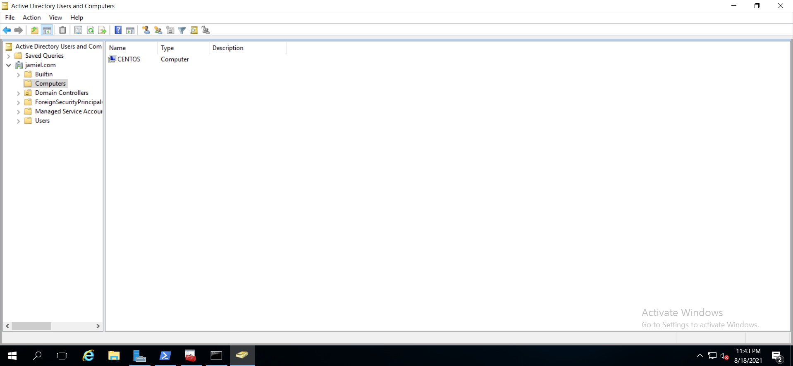

Añadir este servidor Linux a Active Directory
Instalación y configuración
Esto es un proceso no muy difícil de realizar.
Primero tendremos que configurarle un hostname al equipo linux, esto lo hacemos con el siguiente comando.
hostname {nombre deseado} # hostname CENTOS

Ahora comenzaremos instalando las siguientes dependencias.
yum install realmd sssd ntpdate ntp oddjob oddjob-mkhomedir sssd samba-common-tools
Ya instaladas las dependencias procedemos a añadir el CENTOS a AD, con los siguientes comandos.
realm join --user=administrator@{DOMINIO} {DOMINIO}
# EJEMPLO realm join --user=administrator@jamiel.com jamiel.com

Verificación
Hecho los pasos anteriores y vemos que nada nos ha lanzado ningún error procedemos a verificar en nuestro AD si el equipo se ha agregado exitosamente. Como vemos en la imagen todo ha salido a la perfección.
